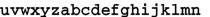

6.4 深入脚本
本节将深入探讨KEYS和ARGV两类参数的区别，以及脚本的沙盒限制和原子性等内容。
前面提到过向脚本传递的参数分为 KEYS 和 ARGV两类，前者表示要操作的键名，后者表示非键名参数。但事实上这一要求并不是强制的，比如 EVAL "return redis.call('get', KEYS[1])" 1 user:Bob 可以获得 user:Bob 的键值，同样还可以使用 EVAL "return redis.call('get', 'user:' .. ARGV[1])" 0 Bob 完成同样的功能，此时我们虽然并未按照 Redis 的规则使用 KEYS 参数传递键名，但还是获得了正确的结果。
虽然规则不是强制的，但不遵守规则依然有一定的代价。Redis将要发布的3.0版本会带有集群（cluster）功能，集群的作用是将数据库中的键分散到不同的节点上。这意味着在脚本执行前就需要知道脚本会操作哪些键以便找到对应的节点，所以如果脚本中的键名没有使用KEYS参数传递则无法兼容集群。
有时候键名是根据脚本某部分的执行结果生成的，这时就无法在执行前将键名明确标出。比如一个集合类型键存储了用户 ID 列表，每个用户使用散列键存储，其中有一个字段是年龄。下面的脚本可以计算某个集合中用户的平均年龄：
local sum = 0
local users = redis.call('SMEMBERS', KEYS[1])
for _, user_id in ipairs(users) do
local user_age = redis.call('HGET', 'user:' .. user_id, 'age')
sum = sum + user_age
end
return sum / #users
这个脚本同样无法兼容集群功能（因为第 4 行中访问了 KEYS 变量中没有的键），但却十分实用，避免了数据往返客户端和服务端的开销。为了兼容集群，可以在客户端获取集合中的用户ID列表，然后将用户ID组装成键名列表传给脚本并计算平均年龄。两种方案都是可行的，至于实际采用哪种就需要开发者自行权衡了。
Redis 脚本禁止使用 Lua 标准库中与文件或系统调用相关的函数，在脚本中只允许对Redis的数据进行处理。并且Redis还通过禁用脚本的全局变量的方式保证每个脚本都是相对隔离的，不会互相干扰。
使用沙盒不仅是为了保证服务器的安全性，而且还确保了脚本的执行结果只和脚本本身和执行时传递的参数有关，不依赖外界条件（如系统时间、系统中某个文件的内容、其他脚本执行结果等）。这是因为在执行复制和AOF持久化（复制和持久化会在第7章介绍）操作时记录的是脚本的内容而不是脚本调用的命令，所以必须保证在脚本内容和参数一样的前提下脚本的执行结果必须是一样的。
除了使用沙盒外，为了确保执行的结果可以重现，Redis 还对随机数和会产生随机结果的命令进行了特殊的处理。
对于随机数而言，Redis 替换了 math.random 和 math.randomseed 函数使得每次执行脚本时生成的随机数列都相同，如果希望获得不同的随机数序列，最简单的方法是由程序生成随机数并通过参数传递给脚本，或者采用更灵活的方法，即在程序中生成随机数传给脚本作为随机数种子（通过 math.randomseed(tonumber(ARGV[种子参数索引]))），这样在脚本中再调用math.random产生的随机数就不同了（由随机数种子决定）。
对于会产生随机结果的命令如SMEMBERS（因为集合类型是无序的）或HKEYS（因为散列类型的字段也是无序的）等 Redis 会对结果按照字典顺序排序。内部是通过调用 Lua标准库的table.sort函数实现的，代码与下面这段很相似：
function __redis__compare_helper(a,b)
if a == false then a = '' end
if b == false then b = '' end
return a < b
end
table.sort(result_array, __redis__compare_helper)
对于会产生随机结果但无法排序的命令（比如只会产生一个元素），Redis会在这类命令执行后将该脚本状态标记为lua_random_dirty，此后只允许调用只读命令，不允许修改数据库的值，否则会返回错误：“Write commands not allowed after non deterministic commands.”属于此类的Redis命令有SPOP，SRANDMEMBER，RANDOMKEY和TIME。
除了EVAL和EVALSHA外，Redis还提供了其他4个脚本相关的命令，一般都会被客户端封装起来，开发者很少能使用到。
1．将脚本加入缓存：
每次执行EVAL命令时Redis都会将脚本的SHA1摘要加入到脚本缓存中，以便下次客户端可以使用EVALSHA命令调用该脚本。如果只是希望将脚本加入脚本缓存而不执行则可以使用 SCRIPT LOAD命令，返回值是脚本的SHA1摘要。就像这样：
redis>
"e0e1f9fabfc9d4800c877a703b823ac0578ff8db"
2．判断脚本是否已经被缓存：
SCRIPT EXISTS命令可以同时查找1个或多个脚本的SHA1 摘要是否被缓存，如：
redis> 
1) (integer) 1
2) (integer) 0
3．清空脚本缓存：
Redis 将脚本的 SHA1 摘要加入到脚本缓存后会永久保留，不会删除，但可以手动使用 SCRIPT FLUSH命令清空脚本缓存：
redis>
OK
4．强制终止当前脚本的执行：
如果想终止当前正在执行的脚本可以使用 SCRIPT KILL命令，下节还会提到这个命令。
Redis的脚本执行是原子的，即脚本执行期间Redis不会执行其他命令。所有的命令都必须等待脚本执行完成后才能执行。为了防止某个脚本执行时间过长导致 Redis 无法提供服务（比如陷入死循环），Redis提供了lua-time-limit参数限制脚本的最长运行时间，默认为5秒钟。当脚本运行时间超过这一限制后，Redis将开始接受其他命令但不会执行（以确保脚本的原子性，因为此时脚本并没有被终止），而是会返回“BUSY”错误。现在我们打开两个redis-cli实例A和B来演示这一情况。首先在A中执行一个死循环脚本：
redis A>
然后马上在B中执行一条命令：
redis B>
这时实例B中的命令并没有马上返回结果，因为Redis已经被实例A发送的死循环脚本阻塞了，无法执行其他命令。等到脚本执行5秒后实例B收到了“BUSY”错误：
(error) BUSY Redis is busy running a script. You can only call SCRIPT KILL or SHUTDOWN
NOSAVE.
(3.74s)
此时 Redis 虽然可以接受任何命令，但实际会执行的只有两个命令：SCRIPT KILL 和SHUTDOWN NOSAVE。
在实例B中执行 SCRIPT KILL命令可以终止当前脚本的运行：
redis B>
OK
此时脚本被终止并且实例A中会返回错误：
(error) ERR Error running script (call to f_694a5fe1ddb97a4c6a1bf299d9537c7d3d0f84e7):
Script killed by user with SCRIPT KILL...
(28.77s)
需要注意的是如果当前执行的脚本对 Redis 的数据进行了修改（如调用 SET、LPUSH 或DEL 等命令）则 SCRIPT KILL 命令不会终止脚本的运行以防止脚本只执行了一部分。因为如果脚本只执行了一部分就被终止，会违背脚本的原子性要求，即脚本中的所有命令要么都执行，要么都不执行。比如在实例A中执行：
redis A>
5秒钟后在实例B中尝试终止该脚本：
redis B>
(error) UNKILLABLE Sorry the script already executed write commands against the dataset. You can either wait the script termination or kill the server in an hard way using the SHUTDOWN NOSAVE command.
这时只能通过 SHUTDOWN NOSAVE 命令强行终止 Redis。在第 2 章中我们介绍过使用SHUTDOWN命令退出Redis，而 SHUTDOWN NOSAVE命令与 SHUTDOWN命令的区别在于前者将不会进行持久化操作，这意味着所有发生在上一次快照（会在 7.1 节介绍）后的数据库修改都会丢失。
由于 Redis 脚本非常高效，所以在大部分情况下都不用担心脚本的性能。但同时由于脚本的强大功能，很多原本在程序中执行的逻辑都可以放到脚本中执行，这时就需要开发者根据具体应用权衡到底哪些任务适合交给脚本。通常来讲不应该在脚本中进行大量耗时的计算，因为毕竟Redis是单进程单线程执行脚本，而程序却能够多进程或多线程运行。
注 释
[2]. http://www.inf.puc-rio.br/~roberto
[4]. 此处的数组指的是数组形式的表类型，即索引为从1 开始的递增整数。
[5]. http://www.lua.org/manual/5.1/manual.html#5
[6]. http://www.kyne.com.au/~mark/software/lua-cjson.php
[7]. cmsgpack库的作者正是Redis 的作者Salvatore Sanfilippo，其项目地址是https://github.com/antirez/lua-cmsgpack。